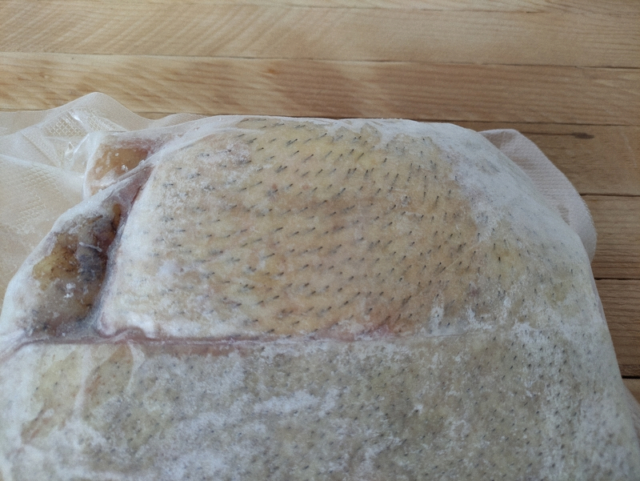

First, you will need to freeze your specimen immediately within the first few days. A rotten specimen can not be preserved. I will send a container large enough for your requested preservation along with dry ice packing. Pack your specimen and send back to me with the included shipping labels. Speed is very important so I have all my deliveries rushed. If you take too long and the specimen is rotting, I will not refund the down payment as it is my costs for shipping and I will keep the specimen you send unless there is a further request and payment to return.
I do any dismemberment prep that is needed, perform the preservation process, and then send the piece back to you in a well secured container.
If you would like a keepsake of your own, remember, there is no size too small or large for me. I am happy to perform preservation on anything. My rates change depending on my current stock of equipment and chemicals so email me to find out the current rates. I require a 20% down payment and then the other 80% upon completion. Please note that I take pictures and other documentation of all my projects.
KSh385@hg84h6vgs6mjmba1249d.ann